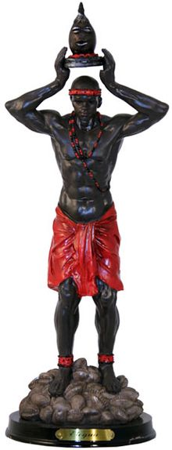
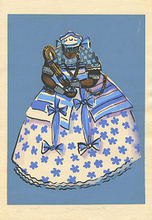

African gods
| Name |
Country |
History |
| Elegua |
Nigeria |
Elegua is known as Èṣù-Ẹlẹ́gbára in the Yoruba religion and is closely associated with Eshu.
Ẹlẹ́gbára means the "master of force" in the Yoruba language. |
| Asase Ya |
Ghana |
Asase Ya is the Earth goddess of fertility of the Bono people, an Akan ethnic group of Ghana.
She is also known as Mother Earth or Aberewaa. |
| Bemba |
Mali |
Bemba is a creator god in Bamana or Bambara mythology, whose people now dwell in Mali.
The name is used to refer to Bemba, who is portrayed as a god consisting of four distinct beings |
| Katonda |
Uganda |
Katonda is the name used to refer to the supreme creator god in the traditional religion of the Baganda people, who are mostly based in present-day Uganda.
Katonda is considered as the father and leader of the Baganda pantheon, known collectively as the balubaale (sing. lubaale).
|
| Njame |
Republic of Congo |
Njambe is the supreme creator god figure in the traditional religion of the Loki or Boloki people, who are primarily based in the Democratic Republic of Congo.
According to anthropologist John H. Weeks, Njambe is also used to refer to a deity associated with sickness and death.
He is prominent in Boloki myths regarding the origin of death. |
| Nana Buluku |
Togo |
Nana Buluku is the female supreme being in the West African traditional religion of the Fon people (Benin, Dahomey) and the Ewe people (Togo).
She is the most influential deity in West African theology, one shared by many ethnic groups other than the Fon people, albeit with variations. |